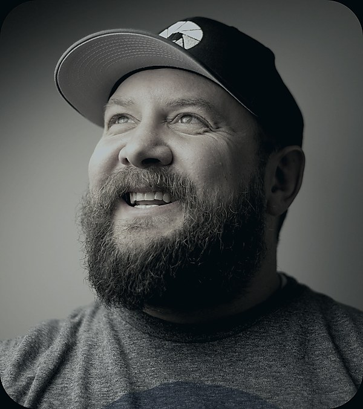

The Author
Aaron King is a storyteller, YouTuber, podcaster, and photographer based in Utah. He is the creator of Photog Adventures, where he has spent the past decade teaching Milky Way photography through YouTube, podcasting, and in-person workshops.
Before that, Aaron worked in the video game industry, including years at Disney working on Disney Infinity.
The idea for this book arrived on a train to Maastricht in 2001, during two years Aaron spent in the Netherlands as a missionary. Those years left him fluent in Dutch, deeply fond of the country, and full of a story he couldn't shake. The original concept featured a Dutch boy named Joop and a windmill headquarters. Over two decades of development, Joop became Ella Dekker, the windmill became a space station, and the story became something much larger. The Dutch roots remained. They always will.